Cloud Pak for Business Automation¶

At this point, you have a working OCP cluster on your platform of choice. Your <ENVIRONMENT_NAME>-env.sh configuration file will contain details of the platform and OCP installation. You will now add the following configurations to this file:
1) The Cloud Pak info that you wish to install
2) The services that you wish to install on the Cloud Pak
Step 2: Deploy Cloud Pak¶
Deploying the Cloud Pak for Business Automation only requires two entries to your environment file (/data/daffy/env/ <ENVIRONMENT_NAME>-env.sh): You need to pick starter services or production services.
| Variable Name | Info | Install Type | Required |
|---|---|---|---|
| CP4BA_VERSION | The version you want to install | Both | Yes |
| CP4BA_IFIX | The fix version of your version supported | Both | No |
| CP4BA_DEPLOYMENT_STARTER_SERVICE | The name of the service you want to deploy | Starter | No |
| CP4BA_DEPLOYMENT_STARTER_SERVICE_SAMPLE | The name of sample yaml you want to deploy | Starter | No |
| CP4BA_DEPLOYMENT_PRODUCTION_DECISIONS | true if you want to deploy decisions | Production | No |
| CP4BA_DEPLOYMENT_PRODUCTION_CONTENT | true if you want to deploy content | Production | No |
| CP4BA_DEPLOYMENT_PRODUCTION_WORKFLOW | true if you want to deploy workflow | Production | No |
Valid Options:
| Variable Name | Valid Options | Variable Name | Valid Options |
|---|---|---|---|
| CP4BA_VERSION | 22.0.1 | CP4BA_IFIX | IF001,IF002,IF003 |
| Variable Name | Valid Options |
|---|---|
| CP4BA_DEPLOYMENT_STARTER_SERVICE | content,decisions,content-decisions,workflow,samples,all |
RPA Server¶
Warning
Currently does not support a ROKS deployment. There is known issue with RPA Server and ticket is open with IBM Support.
| Variable Name | Info | Required |
|---|---|---|
| CP4BA_ENABLE_SERVICE_RPA_SERVER | true if you want to deploy RPA Server | No |
| CP4BA_RPA_SERVER_VERSION | Version of RPA to deploy | NO |
| CP4BA_RPA_SERVER_IFIX | The fix version of your version supported | Yes if RPA True |
| CP4BA_RPA_SERVER_FIRST_TENANT_OWNER_EMAIL | Owner Email Address | Yes if RPA True |
| CP4BA_RPA_SERVER_FIRST_TENANT_OWNER_ID | Owner user ID to login to RPA | Yes if RPA True |
| CP4BA_RPA_SERVER_FIRST_TENANT_OWNER_NAME | Owner Full Name | Yes if RPA True |
| CP4BA_RPA_SERVER_SMTP_USER | SMTP User that RPA will use to send Email | Yes if RPA True |
| CP4BA_RPA_SERVER_SMTP_PORT | SMTP Port that RPA will use to send Email | Yes if RPA True |
| CP4BA_RPA_SERVER_SMTP_SERVER | SMTP Server/IP that RPA will use to send Email | Yes if RPA True |
Valid Options:
| Variable Name | Valid Options | Variable Name | Valid Options |
|---|---|---|---|
| CP4BA_RPA_SERVER_VERSION | 21.0.4 | CP4BA_RPA_SERVER_IFIX | N/A |
| CP4BA_RPA_SERVER_VERSION | 21.0.5 | CP4BA_RPA_SERVER_IFIX | N/A |
You can copy the following to your <ENVIRONMENT_NAME>-env.sh:
CP4BA_VERSION="22.0.1"
CP4BA_IFIX=IF003
CP4BA_DEPLOYMENT_STARTER_SERVICE="content"
#Prodution Services - only step 2 supported today.
###################################################
CP4BA_DEPLOYMENT_PRODUCTION_DECISIONS="false"
CP4BA_DEPLOYMENT_PRODUCTION_CONTENT="false"
CP4BA_DEPLOYMENT_PRODUCTION_WORKFLOW="false"
#RPA Server
############################################
CP4BA_ENABLE_SERVICE_RPA_SERVER="false"
CP4BA_RPA_SERVER_VERSION="21.0.5"
#CP4BA_RPA_SERVER_IFIX=""
#CP4BA_RPA_SERVER_FIRST_TENANT_OWNER_EMAIL="daffy@us.ibm.com"
#CP4BA_RPA_SERVER_FIRST_TENANT_OWNER_ID="daffy"
#CP4BA_RPA_SERVER_FIRST_TENANT_OWNER_NAME="Daffy Admin"
#CP4BA_RPA_SERVER_SMTP_USER="GmailID@Gmail.com"
#CP4BA_RPA_SERVER_SMTP_PORT="587"
#CP4BA_RPA_SERVER_SMTP_SERVER="gmail.smtp.com"
Service Mapping to Components:
| Service | Components | CP4BA Version |
|---|---|---|
| decisions | odm, bai | 22.0.1 |
| content | filenet, cmis, ier, tm, bai | 22.0.1 |
| content-decisions | filenet, cmis, ier, tm, odm, bai | 22.0.1 |
| workflow | workflow, workstreams, pfs, baw_authoring, case, bai | 22.0.1 |
| all | All Components(except iccsap) | 22.0.1 |
| samples | Depends on sample | 22.0.1 |
Run the following command to deploy the Cloud Pak for Business Automation:
/data/daffy/cp4ba/build.sh <ENVIRONMENT_NAME>
When this step is complete, approximately after 10 minutes depending on your environment, you will have the Cloud Pak running. These are just the core Cloud Pak operators, no service is running at this point. The cluster is now ready to deploy the service. At this stage, the cluster consists of IBM Foundation Services and the Cloud Pak for Business Automation operators in the following projects based on selection above:
- cp4ba-starter
- cp4ba-content
- cp4ba-decisions
- cp4ba-workflow
- ibm-common-services
Step 3: Deploy Services¶
Deploying the service does not need any new values to your environment file (<ENVIRONMENT_NAME>-env.sh>). It will use the same values during the Cloud Pak deployment.
| Variable Name | Info | Install Type | Required |
|---|---|---|---|
| CP4BA_VERSION | The version you want to install | Both | Yes |
| CP4BA_IFIX | The fix version of your version support it | Both | No |
| CP4BA_DEPLOYMENT_STARTER_SERVICE | The name of the service you want to deploy | Starter | No |
| CP4BA_DEPLOYMENT_STARTER_SERVICE_SAMPLE | The name of sample yaml you want to deploy | Starter | No |
| Valid Options: |
| Variable Name | Valid Options | Variable Name | Valid Options |
|---|---|---|---|
| CP4BA_VERSION | 22.0.1 | CP4BA_IFIX | IF001,IF002, IF003 |
| Variable Name | Valid Options |
|---|---|
| CP4BA_DEPLOYMENT_STARTER_SERVICE | content,decisions,content-decisions,workflow,all,samples |
Instead of using the included services, you can also deploy your own sample or the included sample CR files from Daffy.
| Variable | Valid Option | Required |
|---|---|---|
| CP4BA_DEPLOYMENT_STARTER_SERVICE | samples | No |
| CP4BA_DEPLOYMENT_STARTER_SERVICE_SAMPLE | see list below | No |
Sample Name
The value you use is without the .yaml in the name.
cd /data/daffy/cp4ba/templates/services/samples
To use samples, you would give the name of the sample in this directory.
| sample | Info | Deployment Type |
|---|---|---|
| ocp-starter-ocs-all-22.0.1-IF001 | All Starters with OpenShift Container Storage | OCP |
| roks-starter-ibm-all-22.0.1-IF001 | All Starters IBM Storage | ROKS |
This is just the Daffy samples, you can create your own as well. Just put your CR in this folder and add your name to your env file.
The given sample names tell you which platform, storage, service and version.
OPS HUB¶
If you want to deploy Open Prediction Service HUB (OPS), you can set this flag to setup it up in your cluster.
| Variable | Valid Option | Required |
|---|---|---|
| CP4BA_ENABLE_SERVICE_OPS | true or false | No |
RPA Server¶
Warning
Currently does not support a ROKS deployment. There is known issue with RPA Server and ticket is open with IBM Support.
| Variable Name | Info | Required |
|---|---|---|
| CP4BA_ENABLE_SERVICE_RPA_SERVER | true if you want to deploy RPA Server | No |
| CP4BA_RPA_SERVER_VERSION | Version of RPA to deploy | Yes if RPA True |
| CP4BA_RPA_SERVER_IFIX | The fix version of your version supported | Yes if RPA True |
| CP4BA_RPA_SERVER_FIRST_TENANT_OWNER_EMAIL | Owner Email Address | Yes if RPA True |
| CP4BA_RPA_SERVER_FIRST_TENANT_OWNER_ID | Owner user ID to login to RPA | Yes if RPA True |
| CP4BA_RPA_SERVER_FIRST_TENANT_OWNER_NAME | Owner Full Name | Yes if RPA True |
| CP4BA_RPA_SERVER_SMTP_USER | SMTP User that RPA will use to send Email | Yes if RPA True |
| CP4BA_RPA_SERVER_SMTP_PORT | SMTP Port that RPA will use to send Email | Yes if RPA True |
| CP4BA_RPA_SERVER_SMTP_SERVER | SMTP Server/IP that RPA will use to send Email | Yes if RPA True |
You can copy the following to your <ENVIRONMENT_NAME>-env.sh:
CP4BA_VERSION="22.0.1"
CP4BA_IFIX="IF003"
CP4BA_DEPLOYMENT_STARTER_SERVICE="content"
#CP4BA_DEPLOYMENT_STARTER_SERVICE_SAMPLE=roks-starter-ibm-all-22.0.1
#Open Prediction Service HUB
############################################
CP4BA_ENABLE_SERVICE_OPS="false"
#RPA Server
############################################
CP4BA_ENABLE_SERVICE_RPA_SERVER="false"
CP4BA_RPA_SERVER_VERSION="21.0.5"
CP4BA_RPA_SERVER_IFIX=""
#CP4BA_RPA_SERVER_FIRST_TENANT_OWNER_EMAIL="daffy@us.ibm.com"
#CP4BA_RPA_SERVER_FIRST_TENANT_OWNER_ID="daffy"
#CP4BA_RPA_SERVER_FIRST_TENANT_OWNER_NAME="Daffy Admin"
#CP4BA_RPA_SERVER_SMTP_USER="GmailID@Gmail.com"
#CP4BA_RPA_SERVER_SMTP_PORT=587
#CP4BA_RPA_SERVER_SMTP_SERVER="gmail.smtp.com"
Options for Starter Services
| Service | Components | CP4BA Version |
|---|---|---|
| decisions | odm, bai | 22.0.1 |
| content | filenet, cmis, ier, tm, bai | 22.0.1 |
| content-decisions | filenet, cmis, ier, tm, odm, bai | 22.0.1 |
| workflow | workflow, workstreams, pfs, baw_authoring, case, bai | 22.0.1 |
| all | all (except iccsap) | 22.0.1 |
| samples | Depends on sample | 21.0.3 |
Be aware, this step is async, meaning that the Daffy engine will deploy the service to the cluster and then complete. This only takes a few minutes to complete. When the deployment of the service script is done, the service is not running yet. Depending on your service, it can take from 1 hour to 6 to complete. You can use the status command below to watch its progress.
Decisions Production¶
To deploy a Decisions Production Pattern, you have to have a db2 database and an IDS LDAP server. This will also include BAI. Daffy can either use your existing assets or can build them locally where daffy is installed. If you just want daffy to build all the needed components on your local bastion, just set the build flags below to true and daffy will build it all.
Important
To have daffy build your database and LDAP config info, you need to have DB2 and IDS LDAP installed locally. Instructions: DB2 and LDAP
| Variable Name | Info | Required | Valid Options |
|---|---|---|---|
| CP4BA_DEPLOYMENT_PRODUCTION_DECISIONS | Do you want to deploy Decisions? | No | true or false |
| CP4BA_DEPLOYMENT_PRODUCTION_DECISIONS_BUILD_DB | Do you want to deploy Decisions DB2 Database locally? | No | true or false |
| CP4BA_DEPLOYMENT_PRODUCTION_DECISIONS_BUILD_LDAP | Do you want to deploy Decisions LDAP locally? | No | true or false |
| CP4BA_DEPLOYMENT_PRODUCTION_DECISIONS_LDAP_SERVER | DNS Name or IP address for your IDS LDAP Server? | No | DNS or IP address |
| CP4BA_DEPLOYMENT_PRODUCTION_DECISIONS_DC_ODM_DATABASE_SERVERNAME | DNS Name or IP address for your DB2 Server | No | DNS or IP address |
CP4BA_DEPLOYMENT_PRODUCTION_DECISIONS="true"
CP4BA_DEPLOYMENT_PRODUCTION_DECISIONS_BUILD_DB="true"
CP4BA_DEPLOYMENT_PRODUCTION_DECISIONS_BUILD_LDAP="true"
CP4BA_DEPLOYMENT_PRODUCTION_DECISIONS_LDAP_SERVER="XXX.XXX.XXX.XXX"
CP4BA_DEPLOYMENT_PRODUCTION_DECISIONS_DC_ODM_DATABASE_SERVERNAME="XXX.XXX.XXX.XXX"
Execute Service¶
Run the following command to deploy the Cloud Pak for Business Automation services:
/data/daffy/cp4ba/service.sh <ENVIRONMENT_NAME>
Step 3a: Status¶
The service can take a few hours to complete, based on which one you chose to deploy. To help monitor the status of the service deployment, you can run the help flag to see what flags you can use to get information on your service deployment.
Run the following commands to check the Cloud Pak for Business Automation to see what command flags you can run:
/data/daffy/cp4ba/service.sh <ENVIRONMENT_NAME> --help
The following command will give you the status of all starter components for the service you deployed:
/data/daffy/cp4ba/service.sh <ENVIRONMENT_NAME> --StarterStatus
/data/daffy/cp4ba/service.sh <ENVIRONMENT_NAME> --Status
The following command will give you the status of RPA Server you deployed:
/data/daffy/cp4ba/service.sh <ENVIRONMENT_NAME> --RPAStatus
If you want to have a running job to refresh every few seconds, you can run the above command via the watch command:
watch -c /data/daffy/cp4ba/service.sh <ENVIRONMENT_NAME> --StarterStatus
To find out the connection info to your new starter services, you can run the console flag to get user names, passwords, and URLs to connect to:
/data/daffy/cp4ba/service.sh <ENVIRONMENT_NAME> --StarterConsole
To find out the connection info to your new Production services, you can run the console flag to get user names, passwords, and URLs to connect to:
/data/daffy/cp4ba/service.sh <ENVIRONMENT_NAME> --Console
To find out the connection info to your RPA Server, you can run the console flag to get user names, passwords, and URLs to connect to:
/data/daffy/cp4ba/service.sh <ENVIRONMENT_NAME> --RPAConsole
Post Daffy Steps¶
RPA Server¶
OpenLdap Config¶
Once you have installed RPA server, you will need add the LDAP Server from the Cloud Pak Dashboard. The following steps will help you manually preform these steps.
The details for the next steps will come when you install Step 3 of Daffy for RPA Server, via your command line console.
Screenshot
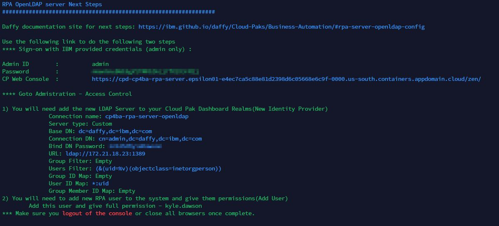
1) Login Cloud Pak Dashboard Link via "IBM provided credentials(admin only)"
Screenshot

2) From the hamburger menu bar, under Administration, select Access Control
Screenshot
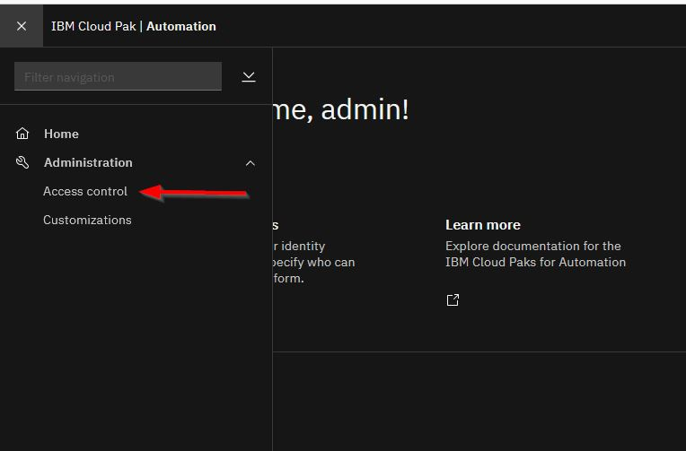
3) Click "Add users"
Screenshot
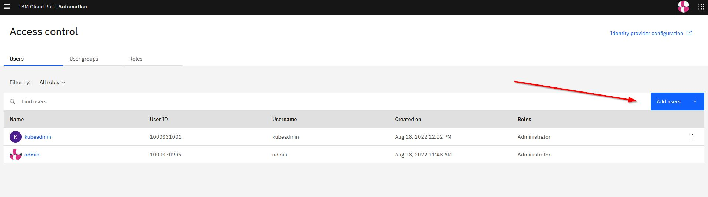
4) Add your RPA user and give Acces to all roles.
5) Logout of the Cloud Pak dashboard and close your browser.
At this point, you are ready to logon to your RPA Server Console.
Decisions Server¶
Once you have installed Production Decisions Server pattern, you will need to do a few manual steps.
- Map Your LDAP Groups to IDP Roles
- Install and Configure your Rule Designer
The details for the next steps will come when you install Step 3 of Daffy for Decisions , via your command line console.
Map LDAP groups to Roles¶
1) Logon to your Cloud Pak Namespace Dashboard from data you were giving with services.sh --console flag.
Login with the Admin Username and Admin Password
Screenshot
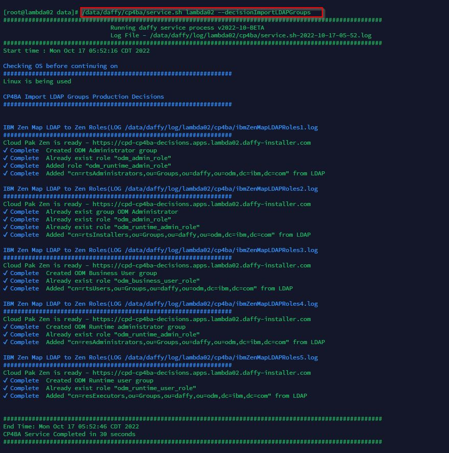
2) From the Dashboard you will need to click the hamburger icon top left
Screenshot
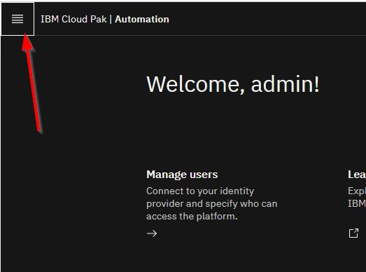
3) From the menu, you need to click the Access Control item
Screenshot
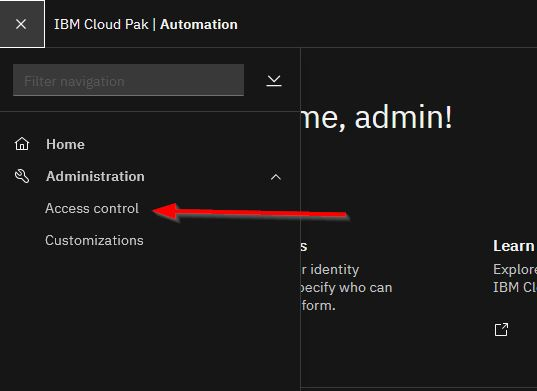
4) From the dashboard, we will need to import the LDAP groups, so click the User Groups tab
Screenshot

5) From the dashboard, click the New user group button on the right
Screenshot

6) For steps 7-10 you will need to repeat for each group listed below.
resAdministrators
resDeployers
resExecutors
resMonitor
rtsAdministrators
rtsConfigManagers
rtsUsers
Screenshot

7) Fill in the name of the new group, easy way just use the same name as the LDAP Group name then click the blue button in bottom right corner labeled next.
Screenshot
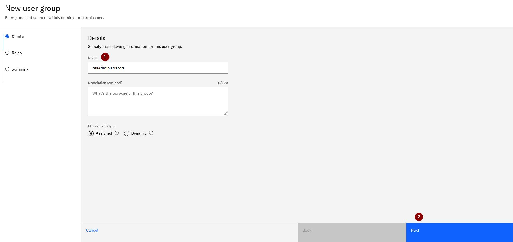
8) Click the Identity provider groups tab to import from our new LDAP Server. The type in the ldap group name you want to import. Once it finds it, click the result. Then click the blue button bottom right corner labeled next.
Screenshot
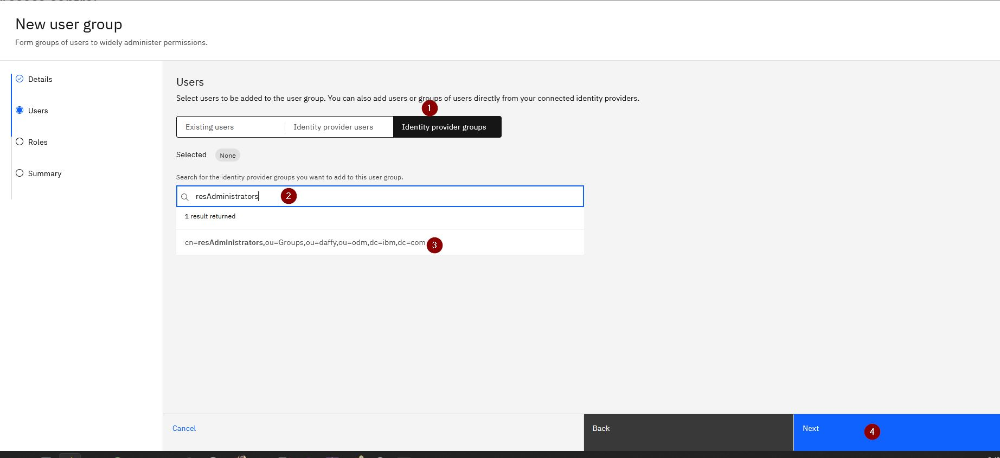
9) Based on the LDAP group you selected, check box for the Role that you want to map to this new group.
Screenshot
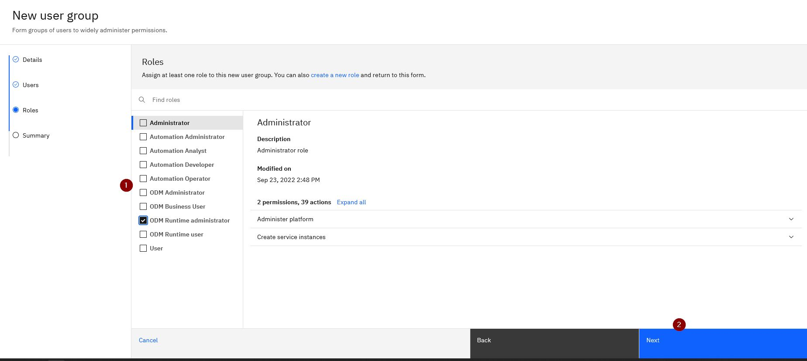
10) Now create the new group by clicking the blue button bottom right corner labeled Create.
Screenshot

Rule Designer¶
After you installed Decisions Services, you need to install and connect Rule Designer to your new instance. For the next steps, any information you need from your environment you should be able to collect from the service.sh --console command output of Daffy.
Important
Original Instructions can be found here
1) Download and install Eclipse. Download Eclipse
Screenshot
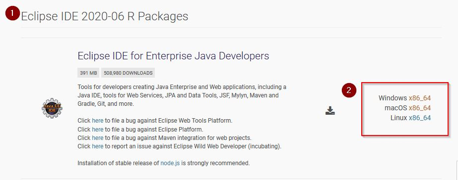
2) Install ODM from Marketplace.
a. Start Eclipse. Click Help > Eclipse Marketplace.
b. In the Find field, enter the text ODM and click Go.
c. Locate the entry IBM Operational Decision Manager for Developers v8.11.0 - Rule Designer that matches the version to install, and then click Install.
Screenshot
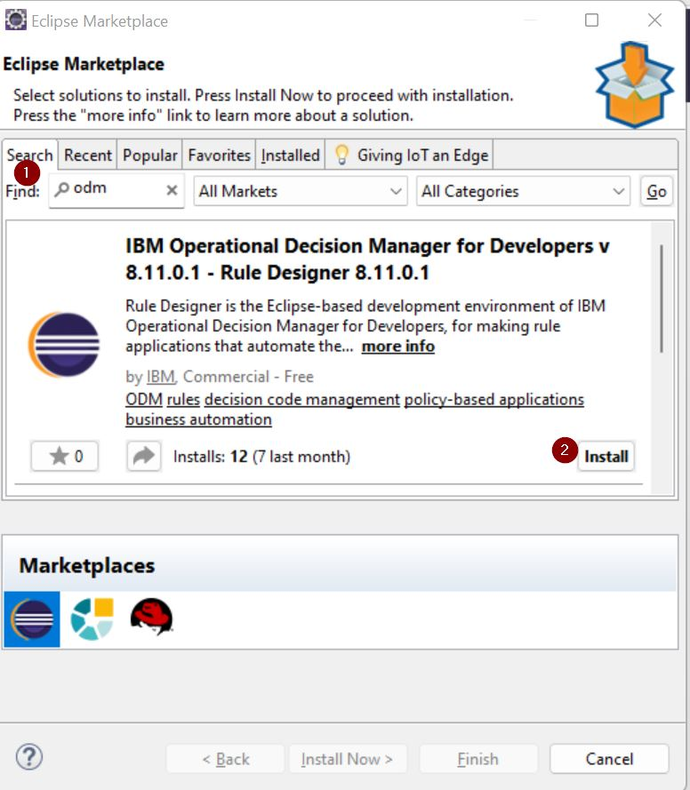
3) Download truststore.jks from your cluster
Screenshot
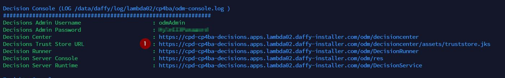
4) Update your Eclipse.ini and add these lines at the end:(update path info based on your setup)
-Djavax.net.ssl.trustStore=C:/Users/Administrator/Desktop/MyTrustStores/truststore.jks
-Djavax.net.ssl.trustStorePassword=changeit
5) Get the Zen Key API from the CPD console
Important
Before the Zen API Key can be generated, you must Map LDAP groups to Roles from above and then via Browser, logon to the Cloud Pak Decisions Desktop once.
Screenshot
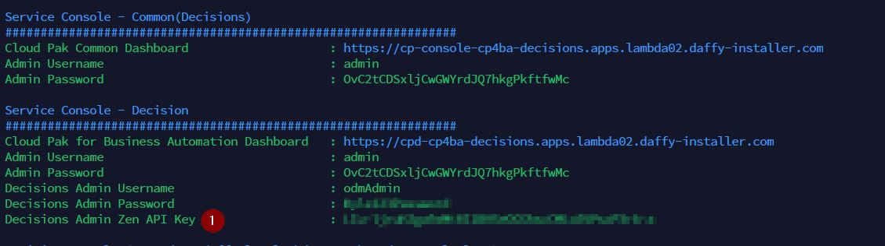
6) Connect Rule Designer
Here is how you can connect to your new Decision Center
- Right Click your Rule Project
- Select Decision Center | connect
Fill out from based on daffy output from --console
- URL: Decision Center
- Authentication: Zen API Key
- User ID: Decisions Admin Username
- API Key: Decisions Admin Zen API Key
Screenshot
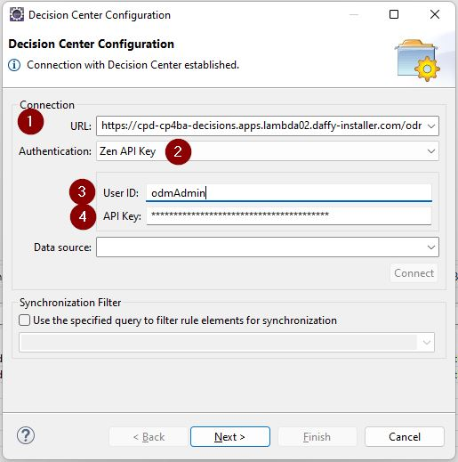
d. Click Next and then Finish